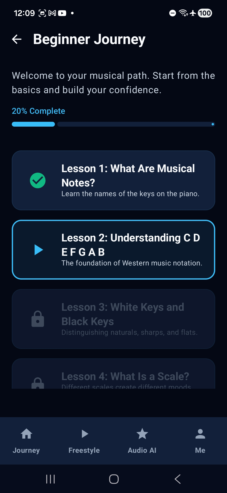
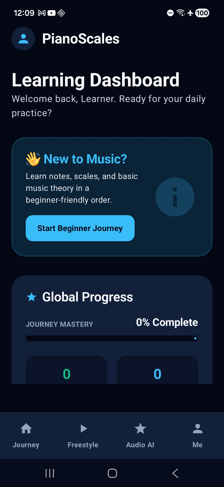
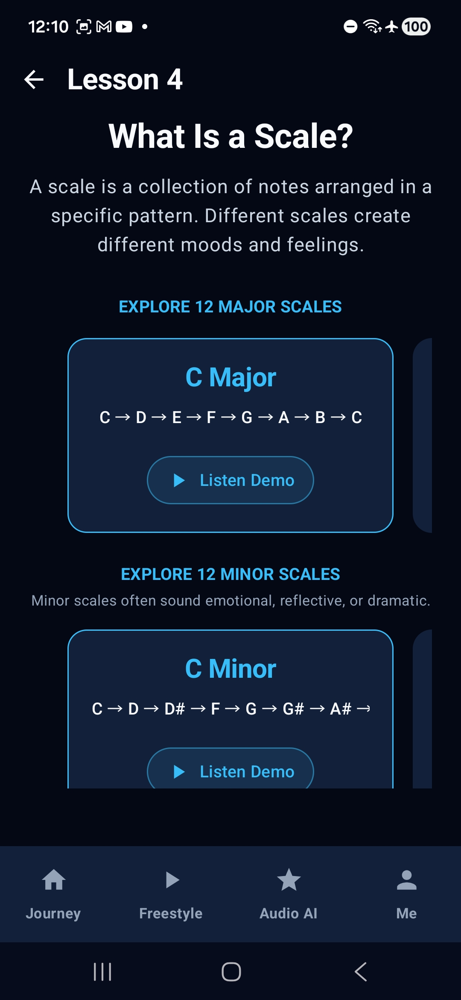
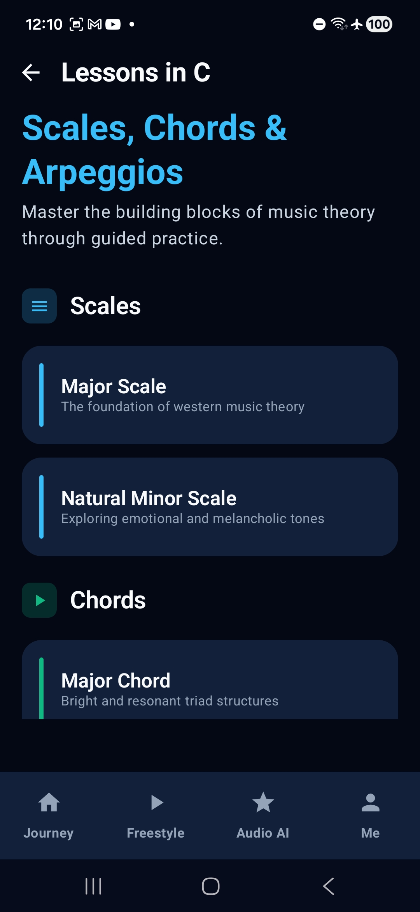
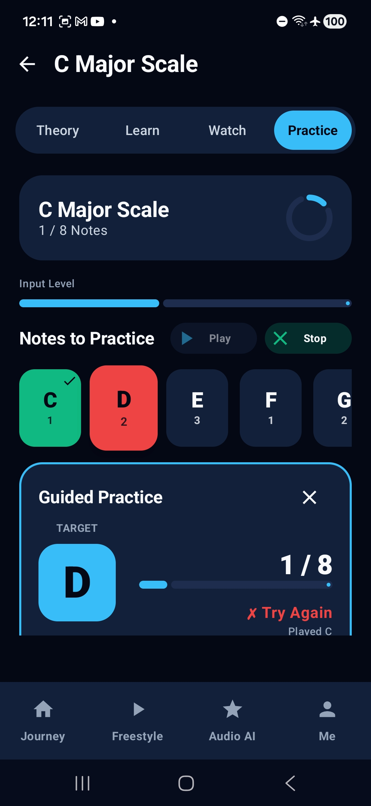
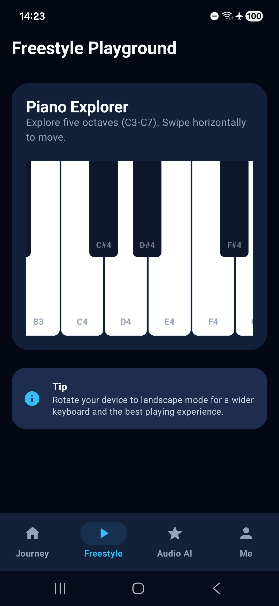
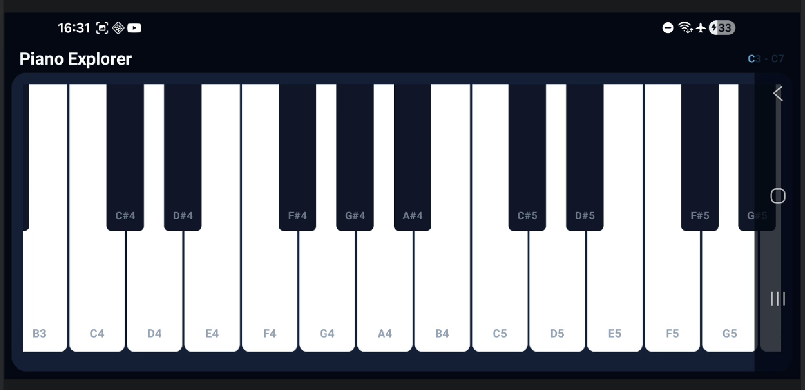
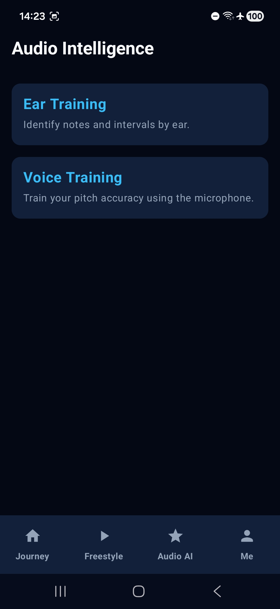
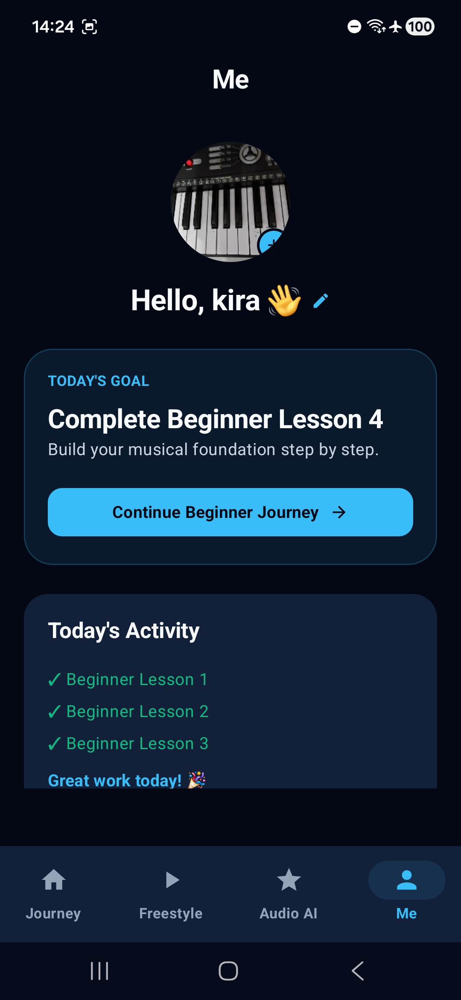
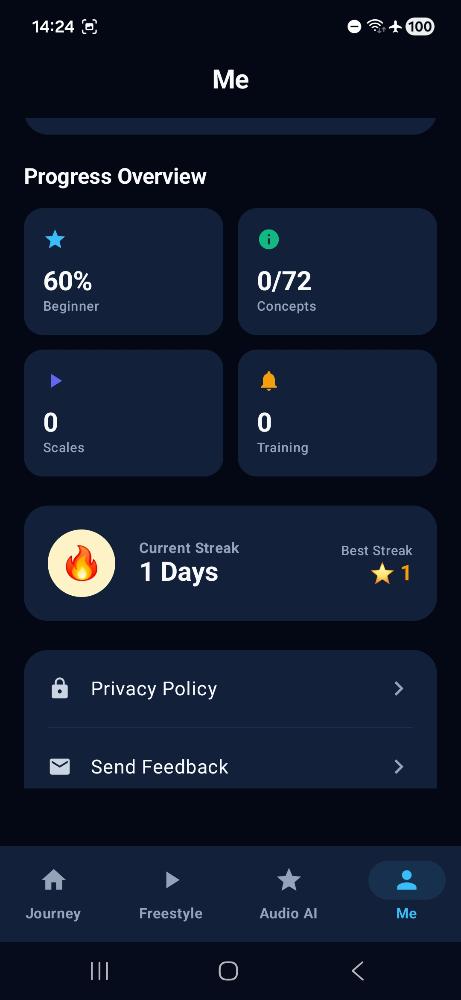

Scales, music theory, ear training, vocal pitch matching, and guided practice — all in one beginner-friendly app.
PianoScales was created for people who always wanted to learn music but never knew where to start.
Instead of overwhelming you with advanced concepts, PianoScales teaches one small step at a time — guiding you from your very first note all the way to confidently playing scales and understanding music theory.

Start from absolute zero. A structured learning path of progressive lessons that unlock one after another — covering notes, piano layout, scales, and your first playable exercises.

Track your learning journey and always know what comes next. PianoScales keeps your progress organized and helps you stay motivated through structured, visible progression.

Learn through piano diagrams, key highlights, finger guidance and easy-to-follow explanations — directly on a virtual keyboard. No walls of text, no guesswork.

Major scales, minor scales, chords and music theory explained in plain language. PianoScales covers multiple chromatic concepts and grows with every release.

Practice directly inside the app using real-time note detection. Receive visual guidance, auto-scrolling progression, octave-aware validation and demo playback — all in one place.

Explore music freely with a multi-octave playable piano. Experiment with scales, melodies and chords without being restricted to lessons.

Rotate your device for an optimized widescreen keyboard — more keys, more room, and a better feel for serious practice sessions.

Improve pitch recognition, identify notes by ear, and practice matching notes with your voice. Going beyond piano into full musical awareness — one of PianoScales' biggest differentiators.

Customize your profile, track goals, and stay motivated with reminders and learning summaries — your own dedicated corner of the app.

Access your learning journey, reminders, goals and privacy information from one central hub — always one tap away.
PianoScales V2 introduces interactive song learning — play along to fan favourites, note by note.
I'm an Android developer with five years of hands-on experience crafting polished, user-first mobile apps. PianoScales grew out of a question I kept asking myself — why is learning music still so intimidating for beginners? I decided to build the app I wish I'd had when I started.
Music has been a constant in my life long before writing a single line of code. I play guitar, ukulele, keyboard and clapbox — each instrument teaching me something different about rhythm, melody and feel. That hands-on perspective shapes every design decision in PianoScales: I build features I genuinely want to use myself.
PianoScales is launching soon on Google Play. Be the first to know.
Download PianoScales